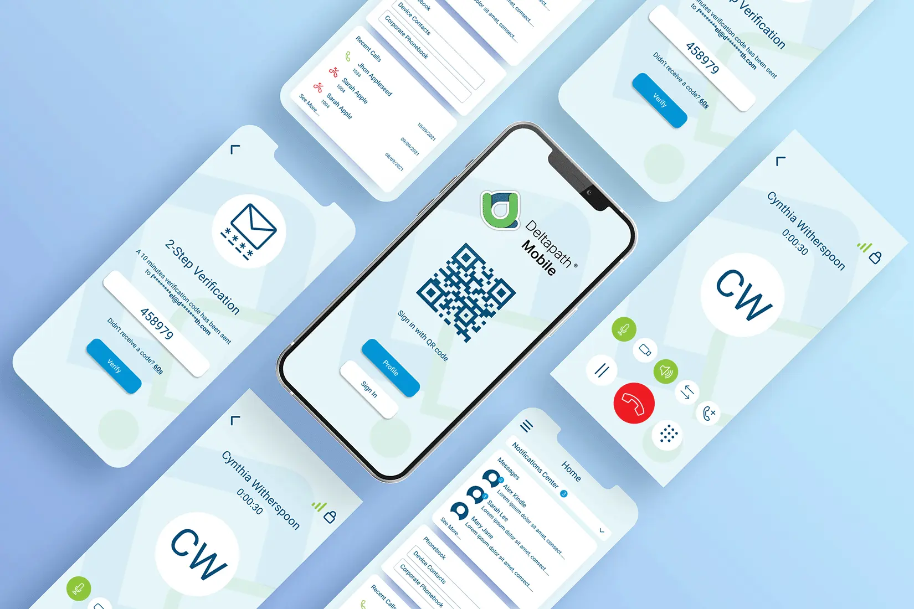
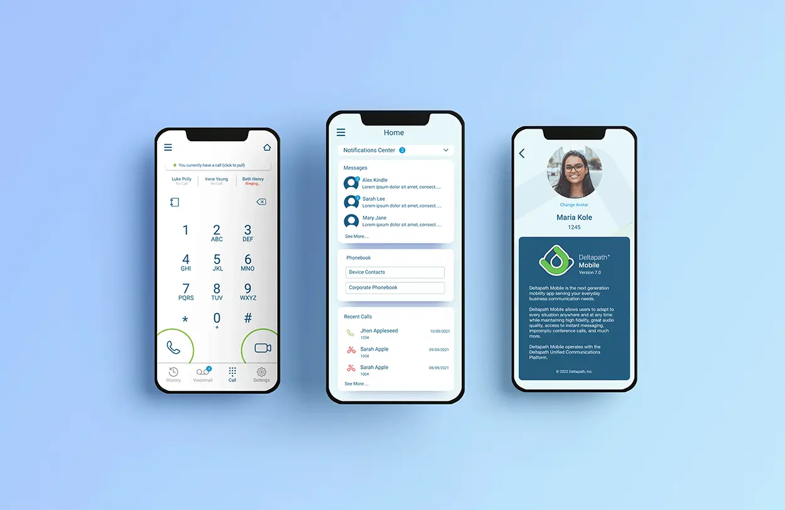
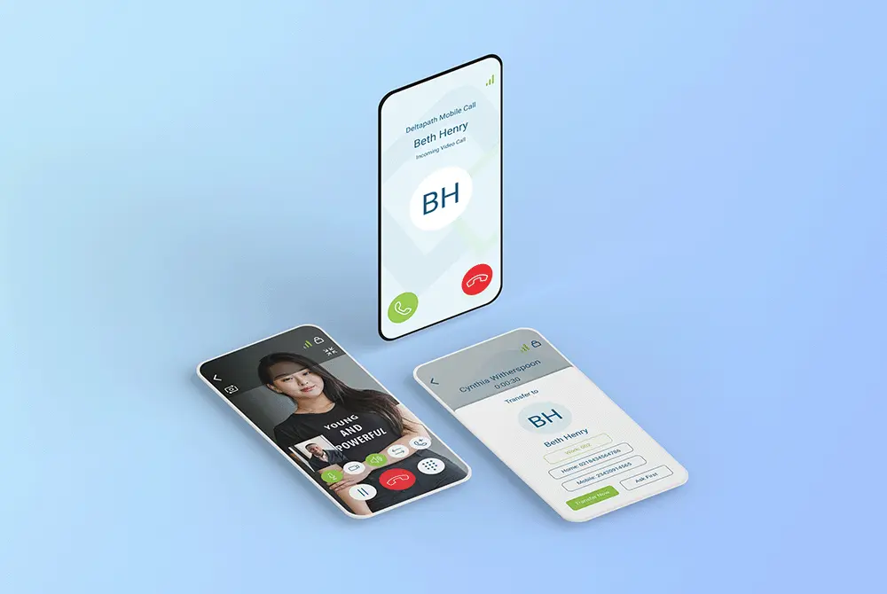
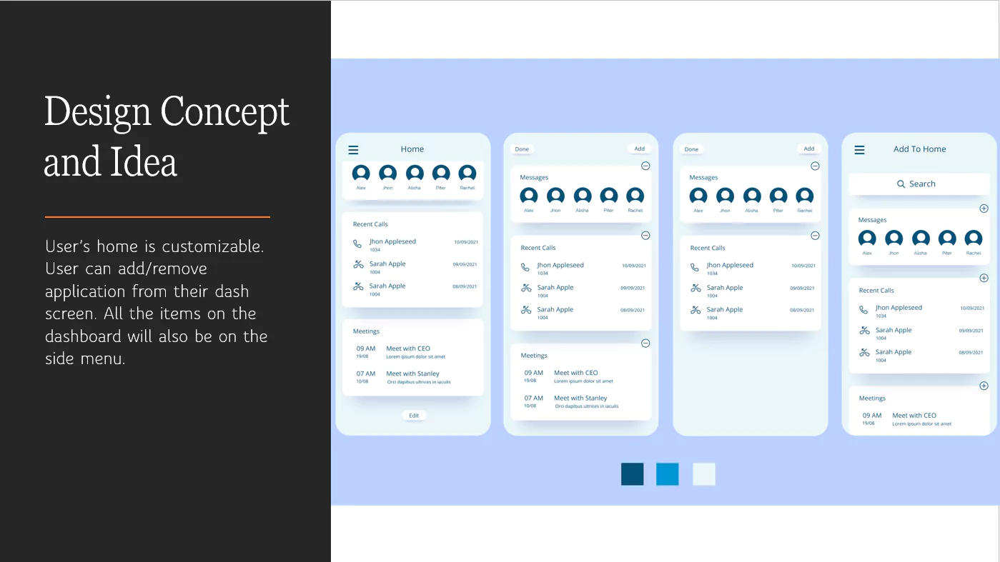
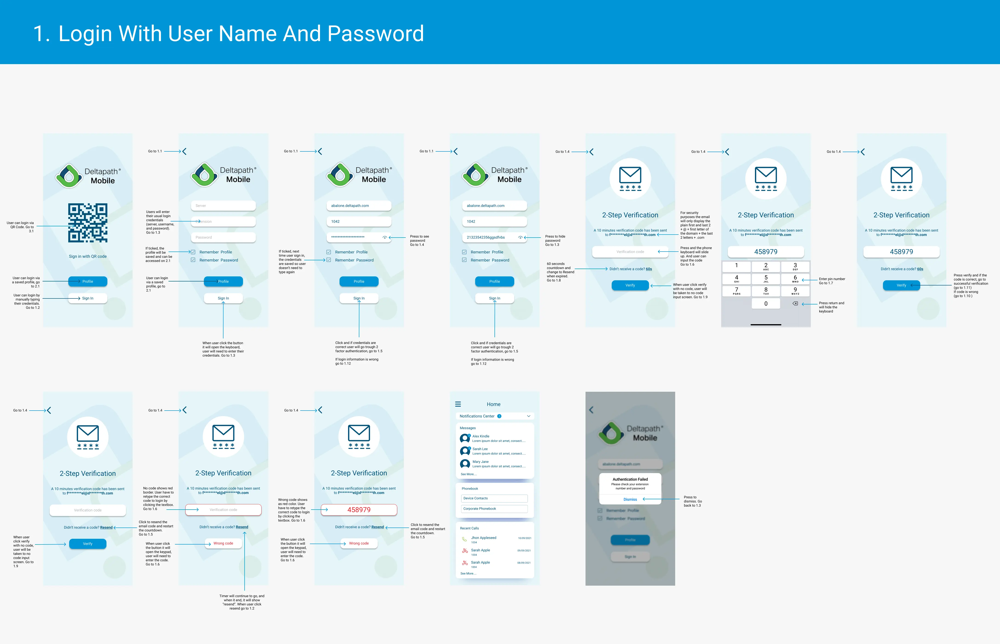
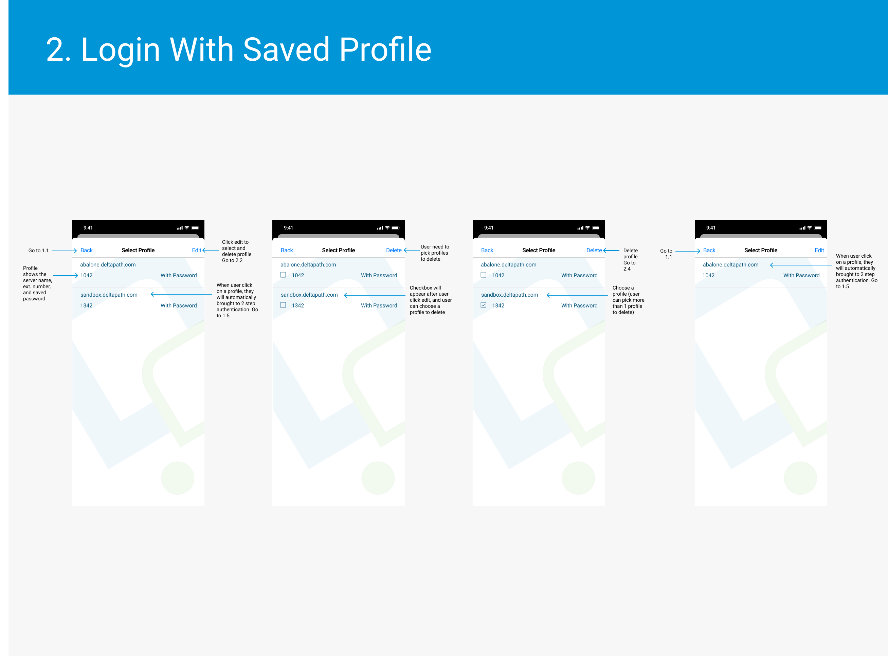
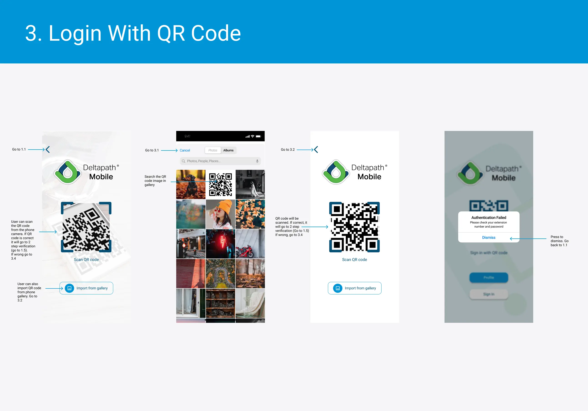
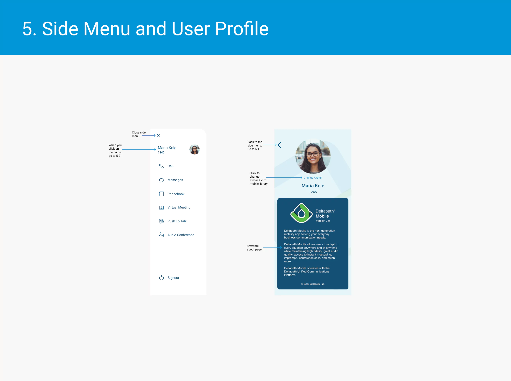

Deltapath Mobile UI & UX Design
Background: Deltapath Mobile is a cutting-edge mobile app that can handle all of your
daily business communication needs. Users of Deltapath Mobile are able to adapt to any situation at any
time and place while keeping high fidelity, excellent audio quality, instant messaging, access to
conference calls on the fly, and much more.
I had to do user experience research for this project, create a strategy for redesigning the following
iteration, and prototype the mobile app's user interface. The business wishes to modernise its user
interface and user experience from the old appearance of 2018.
Expertise
UX & UI Design
Year
2022



Techonogies:


Problem:
Other Apps:
-
Often have one primary feature that serves as the focal point of the app.
-
When fewer features are available, other businesses will typically decide to create a separate app rather than merging all of them into one.
-
Typically, all of the functionality can be arranged on the bottom screen's tabs.
Deltapath Mobile:
-
Every user uses a different key feature, thus we need to make sure that everyone enjoys utilising those features.
-
Need a way to group all the additional features so it isn't crowded and busy (learning from the mistake of the current version)
-
Not all of the functionality can fit on the bottom screen's tabs.
Proposed Solution:
The needs of Deltapath Mobile Users vary depending on the industry they work in, which is advantageous
for sales but problematic when creating a mobile app.
-
When users first instal the app, we give them the option to choose which features they wish to have shortcuts to on their home screens. By doing this, we are giving our user the best chance to complete their primary goal within the application.
-
The home page ought to be as uncomplicated as possible; if there is too much information on the home screen, it will cause information overload and make users more fatigued.
-
The user can browse to the side menu to access the other functions. We need to put function over form, thus we'll use the side menu. Even though the bottom tab is common in many apps, this is only possible because these programmes have simpler structures and capabilities. Since Deltapath mobile is so feature-rich in our situation, I believe having a hamburger menu is good for our user experience.
-
When the user restarts the app after killing it, it will start from the home screen.
-
The last page or activity users were on will remain when they exit the app (without terminating it).

Results:
The team is quite enthusiastic about the new homepage look and user experience even if the project is still in the development stage. The suggested answers are being examined and developed. I've so far designed the UX Flow for the homepage and login screen.



